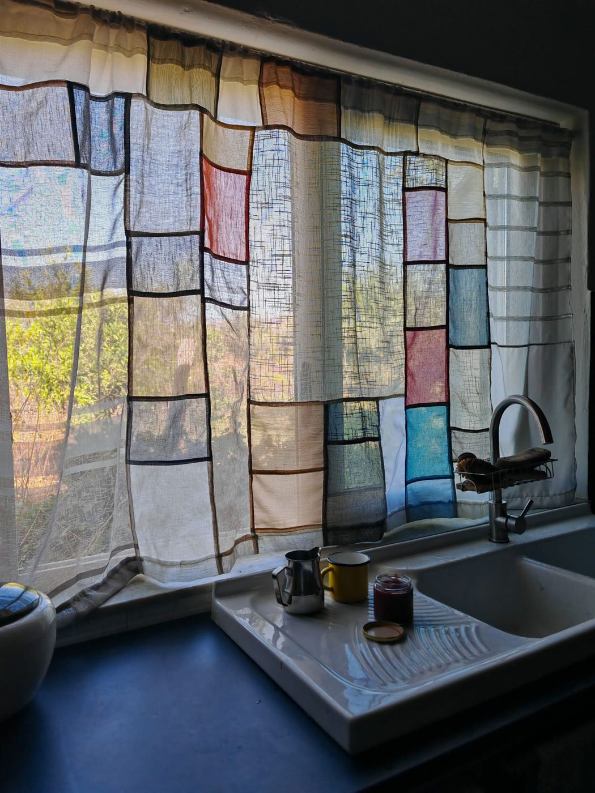
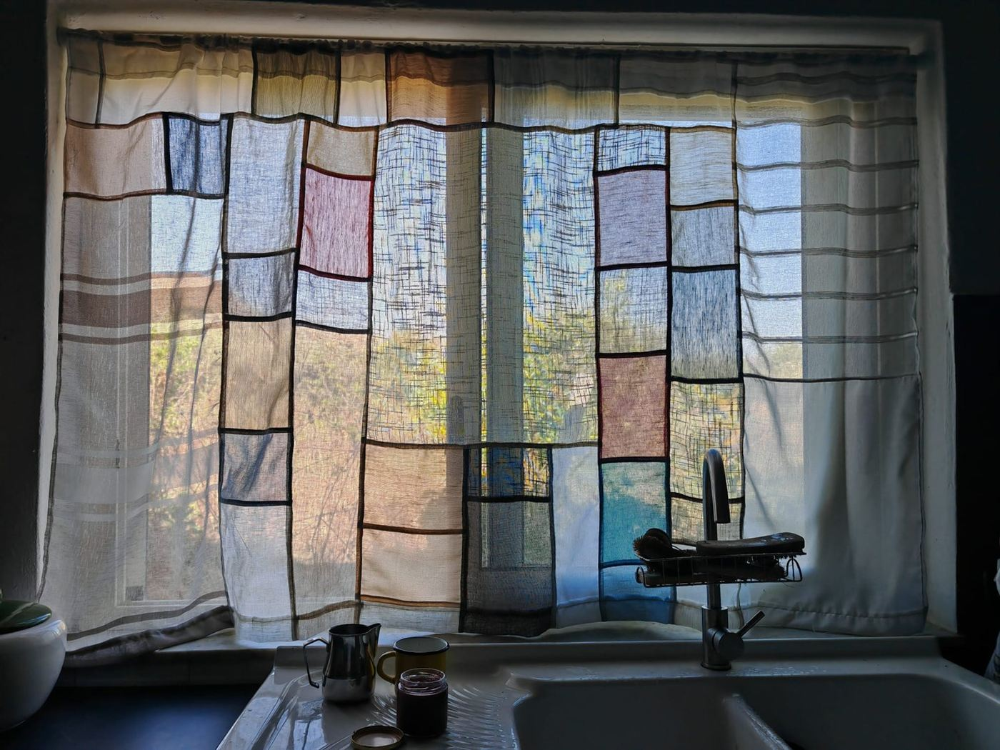

Tenda patchwork · su misura
Trasforma i tuoi vestiti in una tenda unica
Dai nuova vita ai vestiti e ai tessuti leggeri: con la Tenda Patchwork trasformo i capi dimenticati in una tenda su misura, capace di filtrare la luce e di raccontare la tua storia.

Come funziona
Dalla tua finestra al sipario finito
- Mi spedisci i tuoi vestiti e tessuti leggeri: camicie sottili, foulard, lenzuola di cotone, stoffe traspiranti.
- Se non hai abbastanza materiale, non preoccuparti: posso integrare con i tessuti leggeri recuperati da Repunto.
- Disegniamo insieme la tua tenda, pensata su misura per la tua finestra o il tuo spazio.
- Cucio e assemblo ogni pezzo a mano, creando un sipario unico che lascia filtrare la luce.
- Ricevi la tua tenda, pronta per dare un nuovo carattere alla tua casa.
